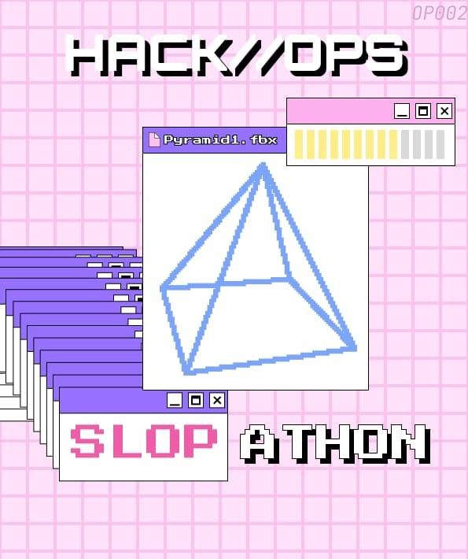

karlsruhe builds here.
hack//ops
hack//ops runs experimental hackathons in karlsruhe
hack//ops turns students into builders and builders into a scene
hack//ops is the fast lane of the karlsruhe tech ecosystem
scroll to fly · 49.0069 N · 8.4037 E
next operation · 04.12 - 06.12.2026
hardware jam.
Hardware hackathon. Solder, sensors, silicon. If it does not physically exist, it does not count.
follow on lu.maregistration opens soon · karlsruhe · freeop//000 · the microprint
You just zoomed in fifty times. This is the smallest print on the desktop, and only the curious ever land on it.
Tell an operator the word microprint at the next event. They will know what it means.
karlsruhe builds here.
community first. mainstream last.
hack//ops is a student group in karlsruhe that runs the hackathon formats that do not fit anywhere else. No corporate pitch decks, no quid pro quo. We build because building together is the point.
We are the accelerated r&d lab of the karlsruhe tech ecosystem: a crew of techies who are not scared of risk, breaking away from the mainstream event format one operation at a time.

hardware jam
04.12 - 06.12.2026 · karlsruhe
Hardware hackathon. Solder, sensors, silicon. If it does not physically exist, it does not count. The anti-slideware format: something has to move, light up, sense or actuate.
Three days, 100 builders, everyone welcome. You ship a working physical thing and demo it live. Hardware and in-kind prizes, no cash, because we want builders and not hackathon-maxxers.
with kit nova and kaira
save the date follow on lu.maregistration opens soon · freetwo tracks
Open track: no theme, no constraints beyond the one that matters. Bring the thing you never had a deadline for.
Power track: one defined problem, one measurable metric, a real scoreboard. Not vibes, not pitch quality.
tracks in progressmachines, safety and mentoring for op//002
agent gauntlet
Your agents versus everyone else's. Vibes do not ship. Benchmarks do.
in planningbuild friday
"I compile, therefore I am." Recurring co-working and show-and-tell nights. Bring a project, leave with three.
in planning
slopathon
july 2026 · karlsruhe · our opening operation
Whoever slops the most, wins. Build the most gloriously cursed, over-engineered, useless-but-working prototype you can. No pitch decks, no recruiter booths.
12 teams shipped 12 working prototypes in one room and the room voted on the last night. Every exhibit is still online.
archived browse the slop museum12 exhibits · every project view on githubhack-ops-ka / slopathonthe vote
20 votes counted in the room on the last night, one per device. Ties are real ties. Nobody was eliminated for shipping zero.
operators.
A growing crew of karlsruhe students, backed by the local ecosystem. Partners and sponsors are announced with each operation.